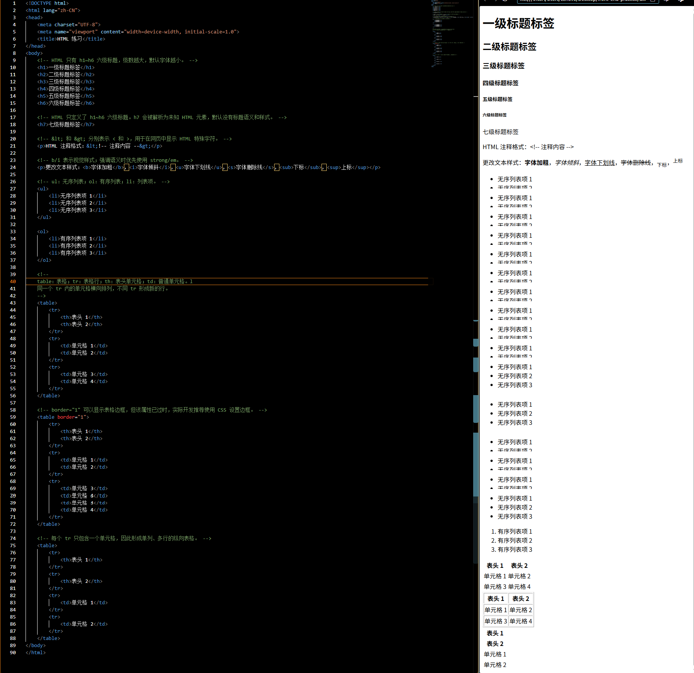

文章标题
文章内容
HTML 注释格式：<!-- 注释内容 -->
更改文本样式：
字体加粗，
字体倾斜，
字体下划线，
字体删除线，
下标，
上标
第一行文字
第二行文字
| 表头 1 | 表头 2 |
|---|---|
| 单元格 1 | 单元格 2 |
| 单元格 3 | 单元格 4 |
| 表头 1 | 表头 2 |
|---|---|
| 单元格 1 | 单元格 2 |
| 单元格 3 | 单元格 4 |
| 表头 1 |
|---|
| 表头 2 |
| 单元格 1 |
| 单元格 2 |
这是一个段落。
这是一个子段落。
文章内容
